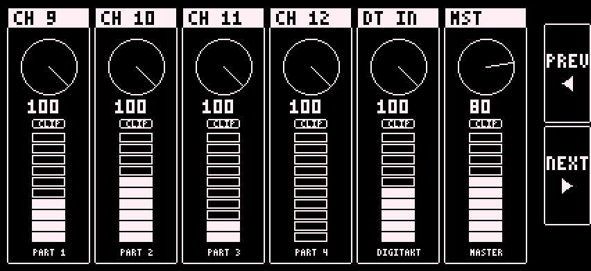

7 Recorder and mixer
Recorder
Record your whole set inside the app. Record, rename, trim and share your takes. Video works the same way and uses the back camera.

Mixer
Levels for the four synths, the Digitakt and the master.

Record your whole set inside the app. Record, rename, trim and share your takes. Video works the same way and uses the back camera.
Levels for the four synths, the Digitakt and the master.
